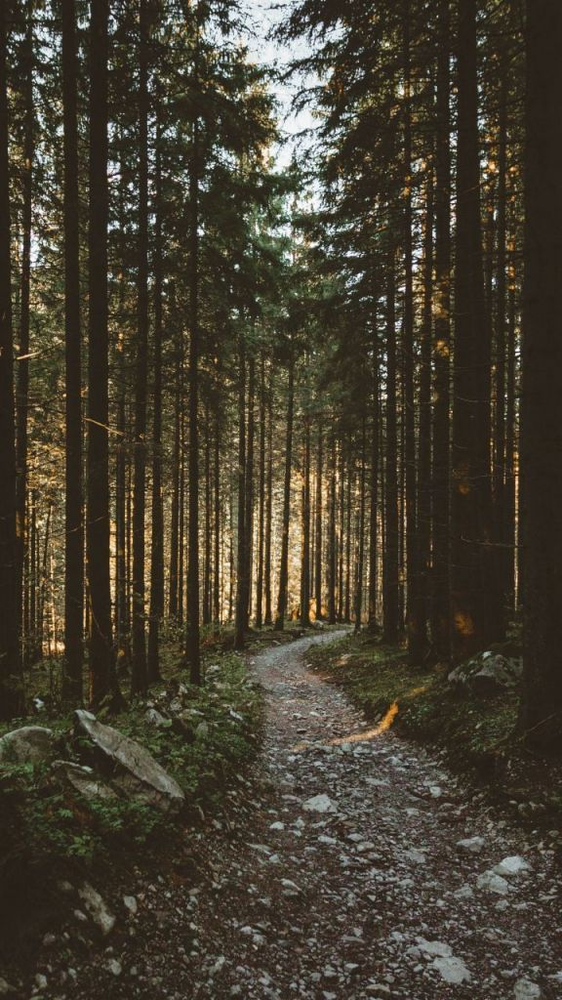
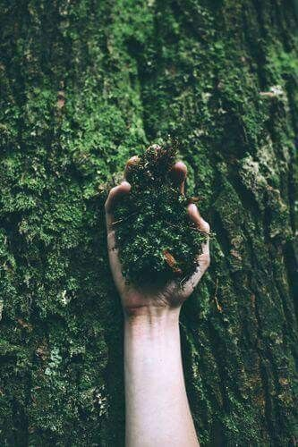

Les Échorces
Fragments enracinés de vie
L'écorce faite de lumière
Ma peau a la clarté des jeunes pousses d'avril,
Ni tout à fait soleil, ni tout à fait ivoire,
Une lueur paisible où le matin respire.
Sous certains feux, parfois, on croit voir une sève figée.
Mes cheveux ? Longs ruisseaux, lianes dans le vent tissé,
Tombent en cascade souple, une onde qui chavire.
Leur teinte au gré des jours sait muer et se fondre :
Miel doré quand l'aube éclot, brume d'ambre au crepuscule.
Quand je dors, des feuilles s'y glissent.
Elles ne tombent pas. Elles tiennent. Elles restent.
On dit mes yeux trop grands, forêts où l'ombre danse,
Vert profond infusé d'ambre et de violence,
Éclairs d'orage doux qui ne frappent jamais,
Mais percent les secrets et les vains attraits.
Souple, je me redresse, droite comme un jeune tronc fier,
Mon dos garde en secret des signes de ronce et de lierre,
Cercles et spirales brillantes,
Où, contre l'Arbre-Mère, enfant, je fus unique.
Ces motifs oubliés luisent quand je respire.
Je marche pieds nus, légère, sur la terre humide,
Mes jambes sont fuseaux, promptes pour l'élan rapide,
Taillées pour fuir sur mousse ou gravir vers l'azur,
Sans redouter l'abîme, sans peur, d'un pas sûr.
J'ai le port altier des déesses anciennes,
La douceur sans mots des filles-abres.
Je suis cet équilibre où tout peut se dissoudre :
Entre le ciel et l'humus,
Entre l'ombre et la poudre.


La sylve pensante
Ma tête est d'un bois qui pense en lentes spirales,
J'engrange tout bruissement secret.
Rêves enfuis, silences entre les mots,
Mousses d'émotions qu'on foule en marchant.
Je déborde de mémoires étrangères,
D'une enfance minutée aux cent ans de la forêt.
Elle vit en moi, plus forte que la terre,
Sève de quinze hivers dans mon sang refait.
Calme en surface comme étang sous la mousse,
Mais sous l'humus gronde un orage latent.
Je ne sais nommer ces forces qui passent,
Mais je les sens, racines en mon sol.
Elles s’ancrent profondément, vibrent, s’enlacent,
Comme une sève à l’œuvre sans parole.
Quand le bonheur me vient, ce n’est point éclat,
Mais l'épanouissement lent d'un bourgeon.
Mon corps se fait jardin, humide et plat,
Ma peau respire au rythme des saisons.
Je deviens eau, brume, feuille translucide,
Presque transparente aux regards du jour.
Si la peur vient, je plie en fougère humide,
Sous l’averse qui bat sans cri, sans contour.
Souvenirs humiques
Je suis née entre deux silences nus :
Un soupir perdu dans le vent des cieux,
Une racine trop tendre pour les mots crus,
Qui cherchait sa voix sous l’humus des lieux.
Je me souviens de vies que je n’eus pas,
Ces souvenirs-là sont mes étoiles.
Ils brillent dans ma nuit, tracent mes pas,
Boussoles d’ombre au creux de ma moelle.
Calme en surface comme étang sous la mousse,
Mais sous l’humus gronde un orage latent.
Je suis taillis en veille, foudre douce,
Trop voir, trop sentir — est-ce don ou serment ?
Je ne crois qu'aux racines, jamais aux roses,
Ayant vu l'amour faux brûler les forets.
Née d'un amour aux couleurs d'aurore,
Je pèse chaque élan à l'aune des forces.
Je ne veux régner. Je cherche à comprendre.
Mes mains vers les rhizomes, pas vers les trônes.
Mes mots sont graines qu'on sème à l'aurore :
Chacun doit germer droit dans les automnes.
Et quand je me tais, c'est que le silence,
Comme pluie sur les feuilles, dit l'essence.
Mon corps-sentier connaît chaque pierre,
Il vibre en érable quand je suis ma place,
Se fige en écorce aux chemins contraires.
Je ne suis pas faite pour ce monde de glace,
Mais que ce monde m'oublie, il perd sa trace.
